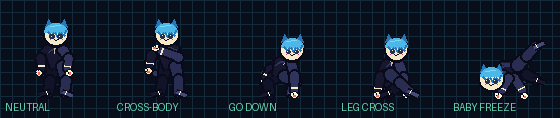
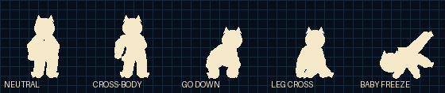
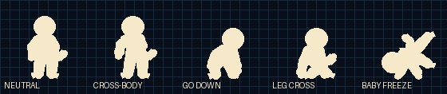
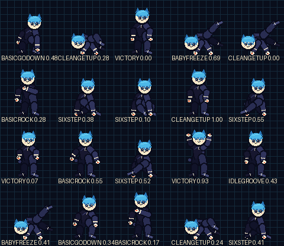
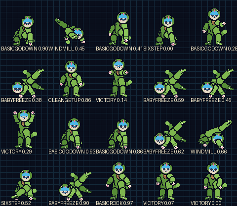
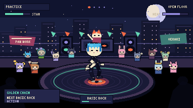
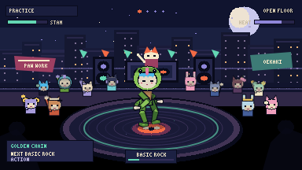
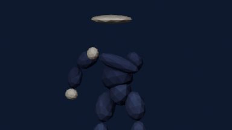
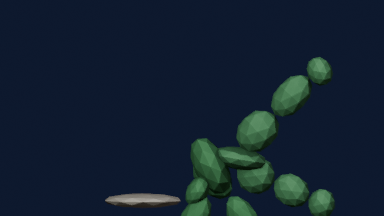

MEASURE MATCH · 384×216
Pause every
drawing.
This is the public visual approval board. Runtime heroes are trimmed indexed sprite atlases with authored camera-space occlusion. The shared BipedRig remains invisible for contacts and scoring; it no longer draws public limbs.
GOLDEN CHAIN · 12 FPS
Motion gate
Basic Rock → Go Down → 6-Step → Windmill → Baby Freeze → Clean Get-Up. Quarter speed exposes attachment, handedness and in-overlap depth changes.
TEN FINAL POSES
Character gate
Neutral groove, cross-body arm groove, deep go-down, floorwork leg-cross and Baby Freeze. Native gameplay pixels are paired with a 4× nearest-neighbor inspection.
{kind=link}
{kind=link}
STILL-IMAGE AUDIT
Silhouette + random 20
Every sampled frame must read as an intentional drawing: correct shoulder, elbow, wrist, hip, knee and foot chains with no depth flip during overlap.




LISTEN → COPY → FREEZE
One-button proof
The animation is scheduled from the known response bar and never restarts on a tap. Inputs independently claim the nearest unmatched cell while the phrase continues.
REJECTED · CE32EAD
The math was not the picture.
The procedural rescue proved fixed lengths, IK, contacts and finite geometry. It failed visual approval because one depth flag chose an entire near side and far side. Its evidence is preserved, but it is not production art.


OFFLINE SOURCE
One armature, authored depth
Blender camera-space segment depths and offline character references guide the cleaned pixel drawings. Neither Blender proxies nor AI reference images ship in the runtime atlas.

